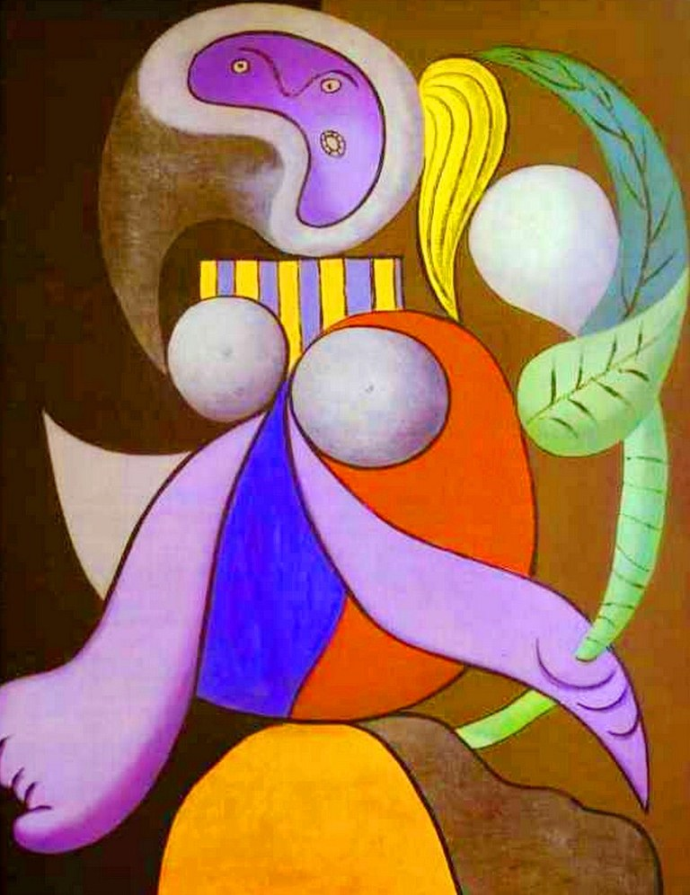

|

|
Detalle
Historia |
Una obra claramente cubista en la que Picasso rompe con las formas de representación del espacio tradicionales e introduce figuras que se asemejan a mascaras africanas. |
| Descripción |
Lienzo (130 × 162 cm) |
| Nombre |
Mujer con una flor |
| Precio |
35 millones de euros |
| Técnica usada |
Cubismo |
| Fecha |
1932 |
|